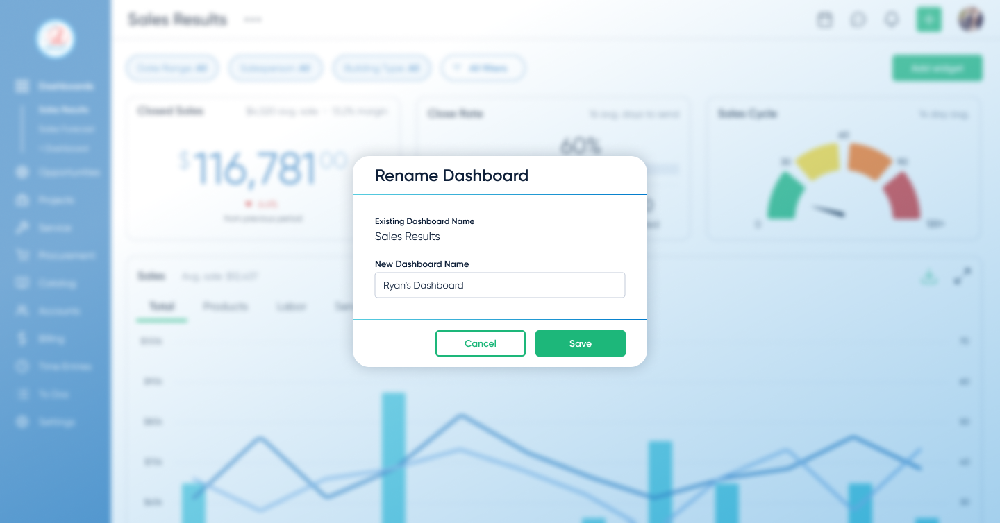

AI-Powered Custom Dashboards
We knew that users were ignoring our default dashboards, but it wasn't simply giving them the KPI cards they wanted. I redesigned them into customizable, role-based dashboards with AI-supported summaries, increasing engagement by 71%.
Problem
Teams ignored the dashboards we had in place. After conducting user research with 7 users and speaking to our sales and support teams, we discovered that users wanted more than just KPI cards - they wanted dashboards tailored to their specific business needs.
Objectives
The goal wasn't just to add metric cards to the existing dashboards or to introduce another dashboard. Rather, we made them customizable, permissions-based, and highly editable. Users could create and save multiple dashboards, each tailored to their specific business needs. We also added AI-powered summarized reporting capabilities, which became a highlight in sales demos.
- Personalized dashboard creation
- AI-generated executive reports
Research Insights
Research
- Interviews: 11 users (7 power users, 4 stakeholders)
- Core insight: Users either ignored dashboards entirely or rarely used them
- Constraint: Sales needed immediate “wow” dashboards for demos, so we wanted all three features in the same release
Design implications
- Prioritize role-based templates over a single generic layout
- Make customization and AI report generation fast and obvious to reduce friction
- Design one or two “demo‑ready” views that give sales instant visual impact
Design Approach & Decisions
-
Scope the feature
Focused on role-based templates, with the ability to easily add additional dashboards and customize their dashboards.
-
Build trust with data
Limited AI to verifiable metrics after research showed users trusted dashboards more than opaque outputs. The AI was not allowed to invent conclusions; it could only summarize the visible data on the dashboard so users could trace the AI's logic back to a specific chart.
Defining Decision: Dashboards vs. AI-first
The CTO believed users didn't want dashboards at all.
He assumed they'd simply prompt AI with their business questions instead.
It was a reasonable hypothesis, but I thought it missed something.
My argument: business owners don't always know what questions to ask. They don't know what they don't know.
Without familiar KPIs in front of them, they have no anchor to even start exploring.
I took the position to user interviews. Across 7 users, the pattern was consistent: people needed to see their data first before they knew what to dig into.
That evidence moved the team to a hybrid approach:
- Dashboards as the foundation for visibility and trust
- AI layered on top for summarization and reporting
This ensured users could see and verify their data first, while still benefiting from AI-generated insights.
Prototyping & Validation
I prototyped the end-to-end flow in Figma and tested it with 5 target users — from choosing a template to customizing widgets and generating an AI summary.
Iteration: more KPI cards, more control
Early concepts kept dashboards minimal. Research showed teams wanted a large set of KPI cards for the metrics they already knew we tracked—and they wanted to rearrange and edit them to match how they run their day. I expanded the design to support dense KPI cards with fast drag‑and‑drop editing and rearranging. That increased scope and timeline, but it removed the core adoption blocker: visibility and control.
- 4/5 users said templates matched how they think about their work
- All users created and customized dashboards without intervening or guidance
These sessions validated the core flow and allowed us to defer advanced metrics and broader AI safely.
Impact
Dashboards shifted from being ignored to becoming the primary way teams monitored their work.
They also improved demo effectiveness, giving sales teams immediate, high-impact views tailored to different audiences.
Users reached an average interaction depth of 2 customizations per chart, showing they weren’t just viewing dashboards. They were actively tailoring charts to fit specific operational questions and workflows.

Lessons
- Research is how you earn the right to push back. The CTO had a hypothesis that AI prompting would replace dashboards entirely. I disagreed, but opinion against opinion doesn't move anyone. Eleven user/stakeholder interviews gave me something concrete to stand behind, and that's what changed the direction.
- Don't know what they don't know. The core UX insight was that users can't ask good questions without data in front of them. Turned out to apply to the internal debate too. Without research, we would have shipped something that felt innovative but still wasn't used.
Next Steps
The team planned to expand AI summarization to other parts of the platform, building on the trust the dashboard work had established. I left D-Tools before that shipped, but the pattern of dashboards first, AI layered on top became the template for how they approached AI features going forward.